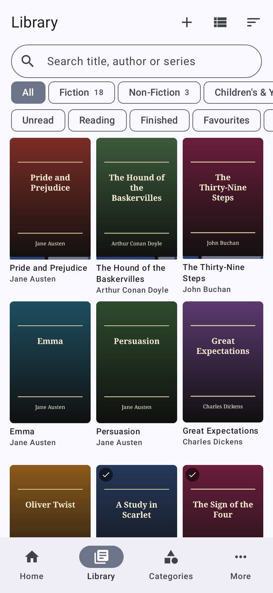
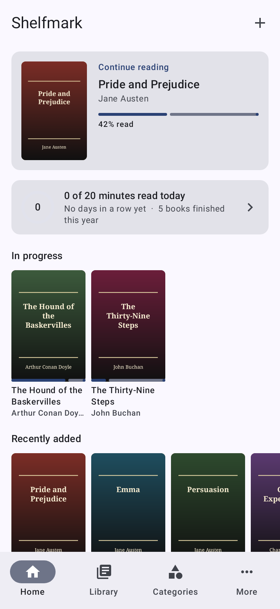
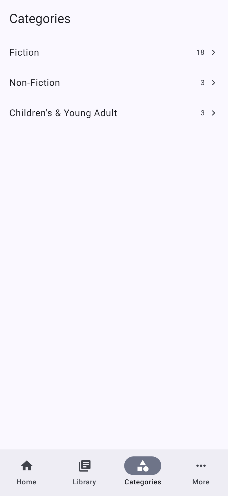
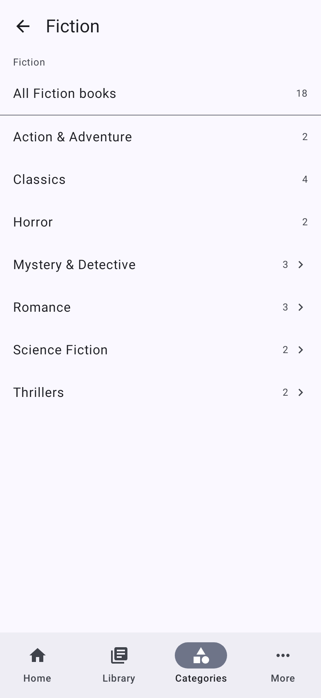
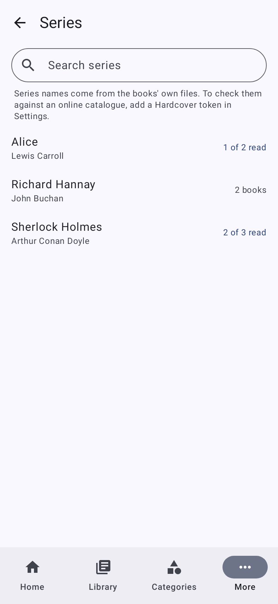
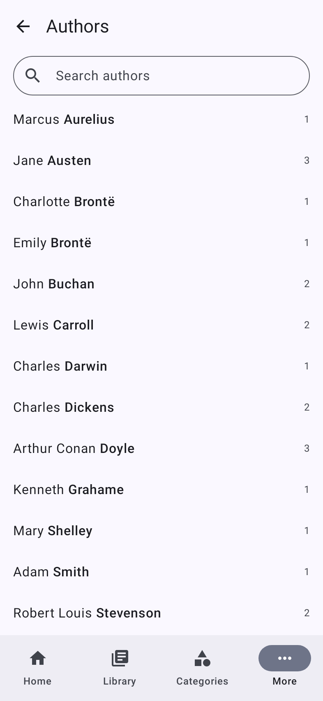
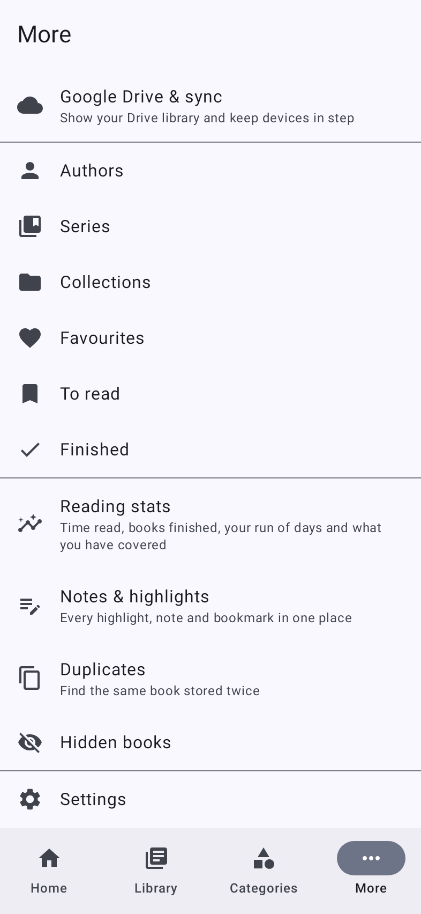
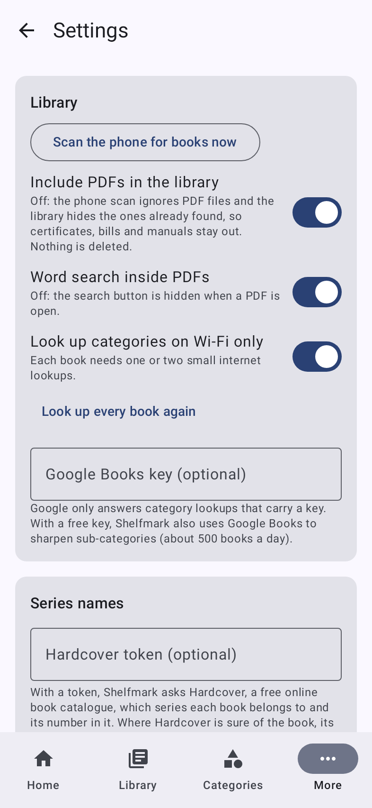

An ebook reader that files your books for you
Shelfmark is for the ebooks you already own. It finds them, looks each one up, and shelves it under a proper bookshop heading. Then it gets out of the way so you can read.
Sync, read aloud and other things that well-known readers sell as upgrades are included, free.
Download for AndroidHow to install
- Version 1.22
- Android 10 or later
- 13 MB
Free, with nothing to unlock. No adverts, no account with the developer, no tracking. Compare or read the release notes.
Chrome may say the file might be harmful. It shows this for app files that do not come from Google Play. Choose Download anyway.

- No paid versionSync and read aloud are in the free app.
- No advertsNone in the app and none on this site.
- Your own DriveSync goes through your Google Drive, not ours.
- Your books stay yoursNothing is uploaded to the developer.
A look inside
These are the real screens, drawn from the app's own code with a made-up shelf of classics. Swipe or scroll sideways to see them all.







How it works
There is nothing to buy and no account to make. Shelfmark reads the books already on your phone or in your Drive.
It finds your books
On the phone, and in the Google Drive folders you choose.
It shelves them
Each book is looked up and filed under a bookshop category, with series in order.
You read
Themes, fonts, page turns and read aloud, with your place synced between devices.
Everything is in, and all of it is free
Nothing below is held back for a paid tier, because there is no paid tier.
Your library
- Reads the common formats
- EPUB, MOBI, AZW3, PDF, TXT, RTF, FB2, CBZ and CBR.
- Sorted for you
- Books are shelved under bookshop categories automatically.
- Series and authors
- Series in order, with what comes next, and every author in one list.
- Google Drive folders
- Read books kept in the Drive folders you pick.
Reading
- Themes and fonts
- Themes, fonts and page-turn styles to suit you.
- Read aloud
- Your phone's voices read the book to you.
- Notes and highlights
- Every highlight, note and bookmark in one place.
- Reading stats
- Time read, books finished, your run of days and a daily goal.
Across devices
- Sync
- Your place, bookmarks, highlights and notes, through your own Google Drive.
- Duplicates
- Find the same book stored twice.
- New-version notice
- Shelfmark tells you when a newer version is out.
Your reading is your business
No servers
Shelfmark has no accounts and no servers of its own. The developer never sees what you read.
Only the folders you pick
Shelfmark reads only the Drive folders you choose, and nothing if you have not chosen one.
No ads, no tracking
There is no advertising, analytics or tracking, in the app or on this site.
Installing and updating
Shelfmark is not on Google Play, so your phone asks a couple of extra questions the first time.
Download the app file
Tap Download on your phone. The file is called Shelfmark.apk and is about 13 MB. If Chrome says the file might be harmful, choose Download anyway.
Allow the install
Open the file. The first time, Android asks you to allow your browser to install apps. Allow it, go back and tap Install. If Google Play Protect steps in, choose More details, then Install anyway.
Updating later
Shelfmark tells you when a newer version is out. Install the new file over the old one and everything you have saved is kept.
Version 1.22, released 14 November 2026. See the release notes, or check your download.
Questions
Is Shelfmark really free?
Yes. There is no paid version, no subscription and no adverts. Features that other readers sell as upgrades, such as sync between devices and read aloud, are included. See the comparison.
Is Shelfmark on Google Play?
No. Shelfmark is a personal project and is downloaded from this site as an Android app file. It needs Android 10 or later.
Which ebook formats does it open?
EPUB, MOBI, AZW3, PDF, TXT, RTF, FB2, CBZ and CBR.
Can it open books bought from Kindle or Kobo?
Only if they have no copy protection. Books locked with DRM can only be opened by the shop's own app, and Shelfmark does not remove DRM.
Does Shelfmark upload my books anywhere?
No. Your book files stay where they are. To sort a book, Shelfmark sends only its title and author to a book catalogue. If you turn on sync, your reading position, bookmarks and notes are saved to your own Google Drive, never the books themselves.
Do I have to sign in to Google?
No. Reading the books on your phone needs no account at all. Google sign-in is only for showing books from your Drive folders and for syncing between your devices.
Can Shelfmark see everything in my Google Drive?
Google's permission screen is worded that way because Google has no permission for a single folder. Shelfmark itself only reads the folders you pick, and reads nothing if you have not picked one.
Does it work without an internet connection?
Yes, for reading. Books on your phone open offline. Sorting new books, Drive and sync need a connection.
What if a book is filed under the wrong heading?
Press and hold the book, tap its category and choose another. Shelfmark never overwrites a choice you have made.
How do I update Shelfmark?
Download the latest version from this site and install it over the one you have. Your library, reading positions, highlights and notes are kept.
Your books, on the right shelves
Free, with no adverts and nothing to unlock. Made by the developer of several other free Android apps: see them all.